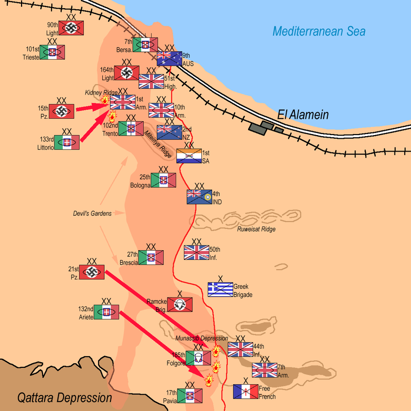
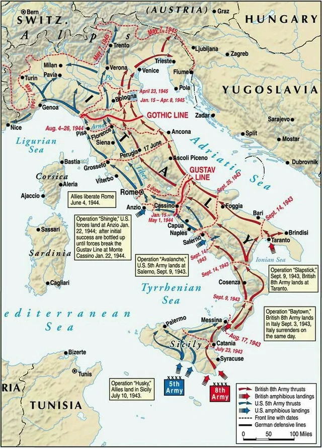
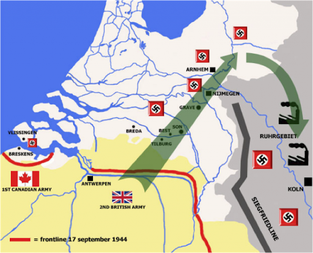
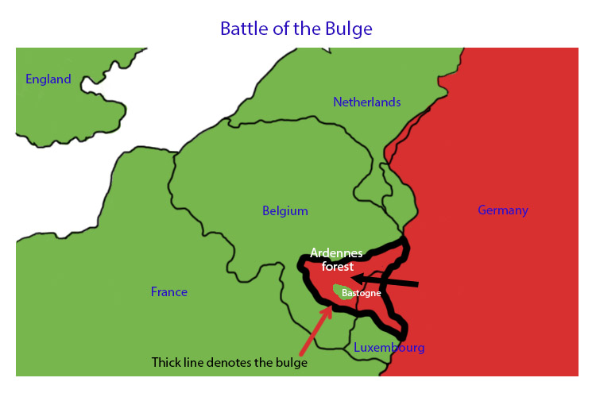

Bernard Montgomery
The Dessert rat and the Field marshal of the Brittish army. Montgomery was put in charge of the Brittish army in north Africa on August 1942 against the Germans Afrika korp commanded by Erwin Rommel who had reached El Alamein . Montgomery decided to specialized in artillery and fortify his positions. When Rommel attacked again on October 23rd,They where quickly reppelled and counter-attacked. Thsi lead to 41,000 German casualties to 13,560 Brittish. With operation Torch commencing, Rommel's Afrika korps was on rapid retreat and pushed out of Africa by 1943
in 1943,Montgomery was put in charge of ths invasion of Sicily.Montgomery easily overrun the German and Italian though they struggled to advance to The Italian main land and the war became a standstill,Montgomery returned to britain to focus on planning operation overlord,The invasion of the Germany-occupied France
When the allied forces landed in Normandy on June 6th 1944, The German army stationed in that area were completely caught off guard and The allies were able to secure all beachead except for Omaha. When they start pushing however,The Brittish and Canadians encounter increasing numbers of German troops stationed in the area that stopped them from taking Caen while the Americans had problems navigating through the countryside. An area where the Germans used to there full advantage. Montgomery was forced to use his forces as a shield and pin down the German army while the Americans swing from the side and Out flank the German army.With Operation Dragoon on its way.The allies were alble to push The Germans out of France and are now invading German Occupied Belgium and threatening the German mainland
.jpeg)
Montgomery's biggest mistake was when wanted to lauch operation market garden. The plan to use paratroopers to take strategic roads in Belgium and clear a path for the main allied armies to sweep through Belgium and end the war by the end of 1944. However,The plan was too inflexible and requires everything to go according to plan for it to work. The operation was also launched after Hitler recalled Gerd von Runstedt from retirement and replacing Walter Model as Comander-in-chief of the western front.This allowed Model to employ his defensive talents on the front lines. There were also 2 elite panzer divisons stationed in the area to rest and recover but are still able to lauch a counter-attack. On September 25 Montgomery was forced to stop the operation while losing precious resources to end the war more quickly
That winter the Germans lauched their last major offensive through the Ardennes forest with ths aim of reaching the sea and encircling the allied forces in Belgium.However, The Germans failed to supply their tanks with enough fuel to reach the sea and they where bogged down at the city of bastonge.Montgomery was able to hold the northern flank preventing the Germans from quickly destroying their armies.with patton's fresh roops from the reserves corp,The last fresh German panzer division were battered and forced to retreat.
With The German Ardennes offensive reppelled and the siztkrieg line penetrated. Germany's capitulation was inevitable, but the allies are trying to take as much ground as possible before the Soviets can spead communism to its occupied nations. Montgomery wanted to do a thrust to Berlin and met the advancing Soviets before destroying pockets of resistance behind its line,this way they could take as much ground as possible and reach Berlin before The Soviets can. But Eisenhower believed that the operation was too risky as the German could easliy couter-attack and encircle the thrust just like Montgomery's previous attempt of operation market garden. Patton while less hubristic but equally bold argues that a risky thrust could be avoid if they strike quickly and encircle the enemy forces along the way. But The supreme commander Eisenhower rejected both ideas and decided on a less risky strategy of pushing and straighten the front and advance slowly and carefully along the whole front. This angered both Patton and Montgomery and they left the room,but Germany's capitulation came in 5 months.